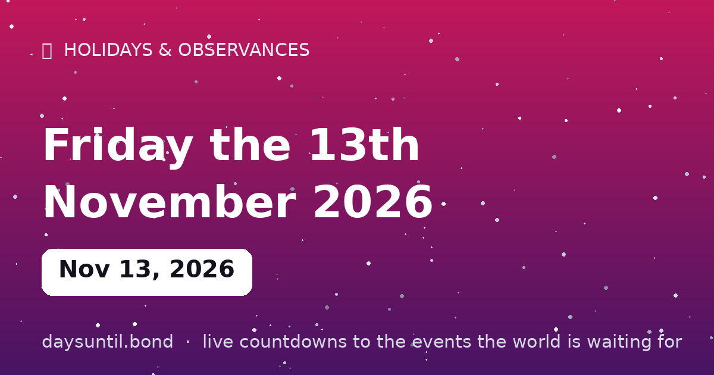

How Many Days Until Friday the 13th November 2026?
Friday the 13th November 2026 falls on Friday, November 13, 2026.
As of October 24, 2026: 20 days to go — 2 weeks and 6 days, 15 weekdays (5 weekend days), about 480 hours.

Quick facts
About Friday the 13th November 2026
Friday the 13th November 2026 falls on a Friday, November 13, 2026. The unluckiest date on the Western calendar: paraskevidekatriaphobia is the genuine word for fear of it.
Statistically, Friday the 13th happens one to three times a year. The counter above tells you exactly how long the superstition industry has to prepare.
Why is Friday the 13th considered unlucky?
There is no single origin, and that is the most honest thing that can be said about it. The explanations usually offered — thirteen at the Last Supper, the arrest of the Knights Templar on Friday 13 October 1307, Loki arriving uninvited as the thirteenth guest in Norse myth — are all stories attached to a fear that already existed, rather than causes of it.
What is documented is that the number 13 and the day Friday each carried negative associations in European folklore before anyone combined them, and the specific pairing appears in print only from the nineteenth century. The superstition is younger than most people assume, and it was popularised rather than inherited.
The one piece of real mathematics
Here is a genuinely verified fact about Friday the 13th, and it is the opposite of a superstition. Over the 400-year cycle of the Gregorian calendar, the 13th of the month falls on a Friday 688 times — more often than on any other day of the week. Saturday and Thursday manage 684 each; Monday and Tuesday 685; Sunday and Wednesday 687.
So the 13th really is slightly more likely to be a Friday than any other weekday. The margin is about one occurrence in 3,400 months, and it is an artefact of how the calendar's leap-year cycle divides — not evidence of anything at all.
How many Friday the 13ths in 2026?
Three, and the first two come back to back. In 2026 the dates are Friday 13 February, Friday 13 March and Friday 13 November. The February–March pairing happens because 2026 is not a leap year: February has exactly 28 days, so if 13 February is a Friday, 13 March is too.
Three is the maximum possible in any year. Every year has at least one; 2027, by contrast, has only one — Friday 13 August 2027 — and 2028 has just one as well, on 13 October.
Has anything actually happened on Friday the 13th?
Not in any way that survives scrutiny. A well-known 1993 study claimed a measurable rise in road accidents on Friday the 13th, and it has been criticised ever since for how small the sample was and how many comparisons were run before one produced a result. Attempts to replicate it have generally not held up.
The more interesting finding is the reverse: several analyses of hospital admissions and accident records have found no effect, or found that the numbers are explained by anxious people behaving differently on the day rather than by anything the date does to them.
What the fear is called
The clinical-sounding name is paraskevidekatriaphobia — from the Greek for Friday, thirteen and fear. The broader fear of the number 13 is triskaidekaphobia. Both are recognised as specific phobias, and both are genuinely distressing for the small number of people who experience them.
The practical impact is not trivial even for those who do not have the phobia: buildings that skip the thirteenth floor, airlines that omit row 13, and a measurable drop in the number of people who will travel, marry or sign a contract on the date.
Other cultures, other unlucky days
Friday the 13th is not universal — it is largely an English-speaking and northern European export. In Spain, Greece and much of Latin America the unlucky day is Tuesday the 13th, which pairs the number with Mars, the god of war. In Italy the unlucky date is Friday the 17th, for reasons tied to how 17 is written in Roman numerals.
In Japan and China the number four is the unlucky one, because it sounds like the word for death — and in China the number 8 is actively lucky for the same phonetic reason. If the fear of 13 feels inevitable, it is worth remembering how arbitrary it looks from the outside.
Why November's Friday the 13th is a busy one
In 2026, 13 November carries two things at once: it is Friday the 13th, and it is World Kindness Day, which is fixed at 13 November every year. The two only coincide when the 13th falls on a Friday, which makes this year's overlap reasonably rare — the next is 2029.
It is a neat accident. The date that Western folklore has spent two centuries calling the unluckiest of the year is also the one set aside for deliberately doing something decent, and the tension between those two ideas is the most interesting thing about the day.
Friday the 13th in other years
Every year has at least one Friday the 13th and at most three. Here is how the next three years compare.
Note 2026's unusual February–March back-to-back pair, which only happens in non-leap years when 13 February falls on a Friday.
| Year | Friday the 13th dates | Count |
|---|---|---|
| 2026 | 13 February, 13 March, 13 November | 3 |
| 2027 | 13 August | 1 |
| 2028 | 13 October | 1 |